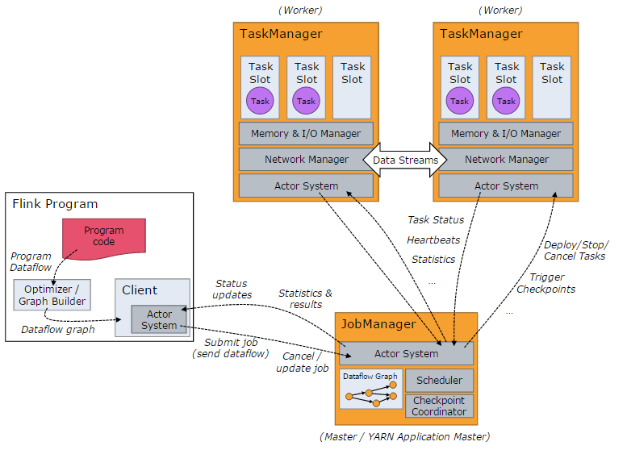
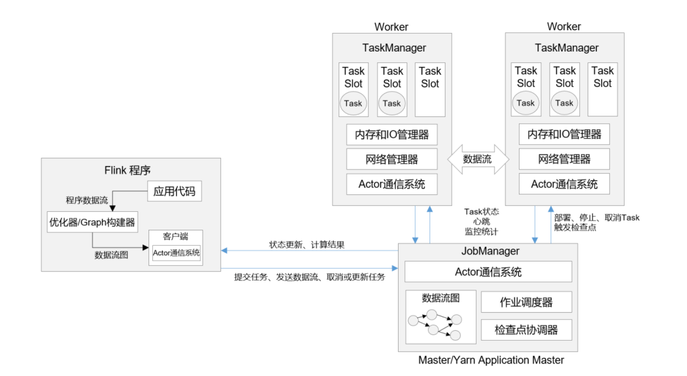
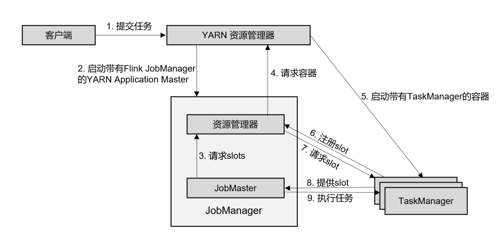

1.架构1.1Flink运行架构1.2Flink作业执行流程1.3 任务提交2.DataStream API3.时间与窗口4.多流转换5. 状态编程6.容错机制7.Flink SQL7.1 API7.1.1 程序架构7.1.2 表环境TableEnvironment7.1.3 创建表7.1.4 表和流转换7.1.5 支持的数据类型7.2 流处理中的表7.2 查询案例8.压测与监控9. 实时数仓9.1 事实数仓案例9.1.1 菜鸟仓配实时数据仓库10. 性能优化


简单来说：当Flink启动集群后，首先会启动一个JobManager和一个或多个TaskManager。由Client提交任务给JobManager，JobManager再调度任务到各个TaskManager去执行，然后TaskManager将心跳和统计信息汇报给JobManger。TaskManager之间以流的形式进行数据的传输。
Client
提交Job的客户端，可以是运行在任何机器上。调用程序的main方法，将代码转换成“数据流图”（Dataflow Graph），并最终生成作业图（JobGraph），一并发送给JobManager。
JobManager
主要负责调度Job并协调Task做checkpoint。从Client处接收到Job和Jar包等资源后，会生成优化后的执行计划，并以Task为单元调度到各个TaskManger去执行
TaskManager
在启动的时候就设置好了槽位数（Slot），每个 slot 能启动⼀个 Task，Task 为线程。从JobManager 处接收需要部署的 Task，部署启动后，与⾃⼰的上游建⽴ Netty 连接，接收数据并处理。
Slot是资源调度的最小单位，slot的数量限制了TaskManager能够并行的任务数量

以yarn模式Per-Job方式为例作业提交执行流程：
在作业模式下，Flink集群不会预先启动，而是在提交作业时，才启动新的JobManager。
3.公司怎么提交的实时任务，有多少 Job Manager、Task Manager？
我们使用 yarn pre-job 模式提交任务，该方式特点：每次提交都会创 建一个新的 Flink 集群，为每一个 job 提供资源，任务之间互相独立，互不影响， 方便管理。任务执行完成之后创建的集群也会消失。线上命令脚本如下：
bin/yarn-session.sh -n 7 -s 8 -jm 3072 -tm 32768 -qu root.. -nm - -d
其中申请7个taskManager，每个8核，每个taskmanager有32768M内存。
对于yarn模式，yarn在Job Mananger 故障会自动进行重启，所以只需要一个，我们配置的最大重启次数是10次
1.Flink中有几种时间语义
（1）处理时间（Processing Time）
处理时间指执行处理操作的机器系统时间
（2）事件事件（Event Time）
事件时间，是指每个事件在对应设备上发生的事件，也就是数据生成的时间
2.什么是watermark？
在事件时间语义下，我们不依赖系统时间，而是基于数据自带的时间戳去定义一个时钟，用来表示当前时间的进展。并且这个时钟以数据的形式传递出去，告诉下游任务当前时间的进展；而且这个时钟的传递不会因为窗口聚合之类的运算而停滞。
做法是在数据流中加入一个时钟标记，记录当前事件时间；这个标记可以直接广播到下游，当下游任务收到这个标记，就可以更新自己的时钟了。
在Flink中，用来衡量事件事件（Event Time）进展的标记，被称作“水位线”Watermark
具体实现，水位线可以看作一条特殊的数据记录，它是插入到数据流中的一个标记点，主要内容就是一个时间戳，用来指示当前的事件时间。而它插入流中的位置，就应该是在某个数据到来之后；这样就可以从这个数据中提取时间戳，作为当前水位线的时间戳了。
3.水位线是如何处理乱序数据的？
乱序数据：在分布式系统中，数据在节点间传输，会因为网络传输延迟的不确定性，导致顺序发生改变。
简单处理：每来一个数据就提取它的时间戳、插入一个水位线，但是乱序数据，可能新的时间戳比之前的还小，那么插入新的水位线时，先判断一下时间戳是否比之前的大，否则就不再生成新的水位线。考虑到大量数据同时到来的处理效率，必须得周期性地生成水位线，解决方法是保存一下之前所有数据的最大时间戳，需要插入水位线时，就直接以它为时间戳生成新的水位线。
如何正确处理“迟到”的数据：用当前已有数据最大时间戳减去延迟时间比如2秒，就是要插入的水位线的时间戳
水位线 = 观察到的最大事件时间 - 最大延迟时间 - 1毫秒
4.水位线的特性？
5.水位线是如何传递的？
如果下游有多个并发子任务：当前水位线，广播给所有的下游子任务
重分区的传输模式，一个任务有可能会收到来自不同分区上游子任务的数据，取上游子任务最小水位线
6.如何生成水位线？
.assignTimestampsAndWatermarks()，主要用来为流中的数据分配时间戳，并生成水位线来指示事件时间。传入一个WatermarkStrategy作为参数，这就是所谓的“水位线生成策略”
WatermarkStrategy：
TimestmpAssiger：主要负责从流中数据元素的某个字段中提取时间戳，并分配给元素。时间戳的分配是生成水位线的基础。
WaterMarkGenerator：基于时间戳生成水位线
Flink内置水位线生成器：
有序流：WatermarkStrategy.
乱序流：WatermarkStrategy.
7.窗口的理解
把窗口理解成一个“桶”，窗口可以把流切割成有限大小的多个“存储桶（bucket）”；每个数据都会分发到对应的桶中，当到达窗口结束时间时，就对每个桶中收集的数据进行计算处理。
Flink中窗口并不是静态准备的，而是动态创建，当有落在这个窗口区间范围的数据到达时，才创建对应的窗口。到达窗口结束时间时，窗口就触发计算并关闭。
8.窗口分类，都有哪些窗口
（1）按照驱动类型分类：以什么标准来开始和结束数据的截取
（2）按照窗口分配数据的规则分类
滚动窗口（Tumbling Window）
滚动窗口有固定大小，是一种对数据进行“均匀切片”的划分方式。窗口之间没有重叠，也不会有间隔，是“首尾相接”的状态。
可以基于时间定义，也可以基于数据定义；需要的参数只有一个，就是窗口大小（window size）
滑动窗口（Sliding Window）
滑动窗口的大小也是固定的，窗口之间并不是首尾相接的，而是可以“错开”一定的位置
定义滑动窗口有2个参数：窗口大小（window size）、滑动步长（window slide）
会话窗口（Session Window）
基于“会话”session来对数据进行分组的。数据来了之后就开启一个会话窗口，如果接下来还有数据陆续到来，那么就一直保持会话；如果一段时间一直没收到数据，那就认为会话超时失效，窗口自动关闭。
全局窗口（Global Window）
把相同key的所有数据分配到同一个窗口中，说直白一点，就跟没分窗口一样。无界流的数据永无止尽，所以这种窗口也没有结束的时候，默认是不会做触发计算的。如果希望它能对数据进行计算处理，还需要自定义“触发器”（Trigger）。
9.迟到的数据的处理
（1）设置水位线延迟时间
水位线是整个应用的全局逻辑时钟。水位线生产之后，会随着数据在任务间流动，从而给每个任务指明当前事件时间。水位线的延迟主要是用来对付分布式网络传输导致的数据乱序，而网络传输的乱序程度一般不会很大，大多集中在几毫秒～几百毫秒，一般设置毫秒～秒级
（2）允许窗口处理迟到数据
大部分乱序数据已经被水位线的延迟等到了，所以往往迟到的数据不会太多。在水位线到达窗口结束时间时，先快速输出一个近似正确计算结果；然后保持窗口继续等待到延迟数据，每来一条数据，窗口就会再次计算，并将更新后的结果输出。这样可以逐步修改计算结果，最终得到准确的统计值
（3）将迟到数据放入窗口侧输出流
用窗口的侧输出流来收集关窗以后的迟到数据，将之前的窗口计算结果保存下来，然后获取侧输出流中的迟到数据，判断数据所属窗口，手动对结果进行合并更新。
4.水位线是如何传递的？
如何理解flink的watermark，当水位线涨到window 的 endTime时，如果后续还有数据过来，窗口还会继续被触发吗？
怎么去重？考虑一个实时场景：双十一场景，滑动窗口长度为 1 小时，滑动距离为 10 秒钟，亿级用户，怎样计算 UV？
1. 什么是状态
每个任务进行计算处理时，可以基于当前数据直接转换得到输出结果；也可以依赖一些其他数据。这些由一个任务维护，并且用来计算输出结果的所有数据，就叫做这个任务的状态。
2. 更好的理解Flink中的状态
算子任务可以分为无状态和有状态，无状态算子，如map、filter、flatMap，计算时不依赖其他数据。
有状态算子，如sum，需要保存之前所有数据的和
3. 有状态算子一般处理流程
（1）算子任务接收到上游发来的数据
（2）获取当前状态
（3）根据业务逻辑进行计算，更新状态
（4）得到计算结果，输出发送到下游任务
4. 状态分类
托管状态（Managed State）
由Flink统一管理，状态的存储访问、故障恢复和重组等一系列问题都由Flink实现
算子状态（Operator State）
状态作用范围限定为当前的算子任务实例，也就是只对当前并行子任务实例有效
（1）列表状态（ListState）
（2）联合列表状态（UnionListState）
（3）广播状态（BroadcastState）
按键分区状态
状态是根据输入流中定义的键（key）来维护和访问的，所以只能定义在按键分区流（KeyedStream）中，也就keyBy之后才可以使用
（1）值状态（ValueState）
（2）列表状态（ListState）
（3）映射状态（MapState）
（4）归约状态（ReducingState）
（5）聚合状态（AggregatingState）
原始状态（Raw State）
自定义，开辟一块内存，自己管理，实现状态的序列化和故障恢复
1.Flink是如何保障系统容错性的？
Flink容错机制的核心就是检查点，它通过巧妙的分布式快照算法保障了故障恢复后的一致性，并且尽可能地降低对处理性能的影响
检查点是如何保存的？什么时间点保存？
周期性的触发保存，每隔一段时间做一次存档；当所有任务都恰好处理完一个相同的输入数据的时候，将他们的状态保存下来。
检查点算法—基于Chandy-Lamport算法的分布式快照
实现的目标是，在不暂停流处理的前提下，让每个任务“认出”触发检查点保存的那个数据。
在数据流中插入一个特殊的数据结构（Checkpoint Barrier），专门用来表示触发检查点保存的时间点，收到保存检查点的指令后，Source任务可以在当前数据流中插入这个结构，之后的所有任务只要遇到它就开始对状态做持久化快照保存。
分布式快照算法—异步分界线快照（asynchronous barrier snapshotting）
算法的核心就是2个原则：当上游任务向多个并行任务发送barrier时，需要广播出去；而多个上游任务向同一个下游任务传递barrier时，需要在下游执行“分界线对齐”（barrier alignment）操作，也就是需要等到所有并行分区的barrier都到齐，才可以开始状态的保存。
从检查点恢复状态的具体步骤：
（1）重启应用
遇到故障之后，第一步就是重启。应用重启后，所有任务的状态会清空
（2）读取检查点，重置状态
找到最近一次保存的检查点，从中读取出每个算子任务状态的快照，分别填充到对应的状态中
（3）重放数据
如果直接继续处理数据，那么保存检查点之后、到发生故障这段时间内的数据，就相当于丢掉了；会造成计算结果错误。
为了不丢数据，应该从保存检查点后开始重新读取数据，可以通过Source任务向外部数据源 重新提交偏移量（offset）来实现。
（4）继续处理数据
2.检查点存储
检查点默认是存储在JobManager的堆（heap）内存中，也可以设置存储到文件系统中，比如HDFS
3.状态一致性（状态 Exactly-once）
对于Flink来说，一致性指的是多个节点并行处理不同的任务，我们要保证计算结果是正确的，就必须不漏掉任何一个数据，而且也不会重复处理同一个数据。
exactly-once要求数据不丢，需要有数据重放机制来保证这一点，Flink使用的是一种轻量级快照机制—检查点（checkpoint）来保证exactly-once语义。
4.端到端一致性（端到端 Exactly - once）
完整的流处理应用，包括数据源、流处理器和外部存储系统三个部分。
输入端
外部数据源必须拥有重放数据的能力，像Kafka
流处理
检查点机制可以保证故障恢复后数据不丢失，并且只处理一次，可以做到exactly-once一致性语义
输出端
能够保证exactly-once一致性写入方式有2种：幂等写入和事务写入
幂等（idempotent）写入
一个操作可以重复执行很多次，但只导致一次结果更改，后面再重复执行就不会对结果起作用。
Redis中键值存储、Mysql
出现短暂不一致
事务（transactional）写入
事务是应用程序中一系列严密的操作，所有操作必须成功完成，否则在每个操作中所做的所有更改都会被撤销。事务有4个基本特性：原子性（Atomicity）、一致性（Correspondence）、隔离性（Isolation）、持久性（Durability） ACID
当Sink任务遇到barrier时，开始保存状态的同时开启一个事务，接下来所有数据的写入都在这个事务中；待到当前检查点保存完毕时，将事务提交，所有写入的数据就真正可用了。如果中间过程出现故障，状态会回退到上一个检查点，而当前事务没有正常关闭（因为当前检查点没有保存完），所以会回滚，写入到外部的数据就被撤销了
预写日志（write-ahead-log，WAL）
（1）先把结果数据作为日志（log）状态保存起来
（2）进行检查点保存时，也会将这些结果数据一并做持久化存储
（3）在收到检查点完成的通知时，将所有结果一次性写入外部系统
DataStream API提供了一个模板类GenericWriteAheadSink，来实现这种事务型的写入方式
缺点：如果检查点已经成功保存、数据也成功地一批写入到外部系统，但是最终保存确认信息时出现故障，Flink最终还是会认为没有成功写入。于是发生故障时，不会使用这个检查点，而是需要回退到上一个，这样就会导致这批数据的重复写入。
两阶段提交（2PC）
（1）当第一条数据到来时，或者收到检查点的分界线时，Sink任务都会启动一个事务
（2）接下来接收到的所有数据，都通过这个事务写入外部系统；这是由于事务没有提交，所以数据尽管吸入了外部系统，但是不可用，是“预提交”的状态
（3）当Sink任务收到JobManager发来检查点完成的通知时，正式提交事务，写入的结果就真正可用了
Table API和SQL可以看作联合在一起的一套API，程序处理中，输入数据可以定义成一张表，然后对这张表进行查询，得到新的表，相当于数据流的转换操作。最后定义一张用于输出的表。
程序基本架构：
121// 创建表环境2TableEnvironment tableEnv = ...;3// 创建输入表，连接外部系统读取数据4tableEnv.executeSql("CREATE TEMPORARY TABLE inputTable ... WITH('connector = ...')");5// 注册一个表，连接到外部系统，用于输出6tableEnv.executeSql("CREATE TEMPORARY TABLE outputTable ... WITH('connector = ...')");7// 执行SQL对表进行查询转换，得到一个新的表8Table table1 = tableEnv.sqlQuery("SELECT ... FROM inputTable...");9// 使用Table API对表进行查询转换，得到一个新的表10Table table2 = tableEnv.from("inputTable").select(...);11// 将得到的结果写入输出表12TableResult tableResult = table.executeInsert("outputTable");通过执行DDL直接创建一个表，执行CREATE语句中用WITH指定外部系统的连接器，就可以连接外部系统读取数据了。直接用SQL语句实现全部的流处理过程。
Flink在使用Table API和SQL需要一个特别的运行时环境，这就是所谓的“表环境（TableEnvironment）”，它主要负责：
注册Catalog和表
这里的Catalog就是“目录”，与标准SQL中的概念一致，主要用来管理所有数据库（database）和表（table）的元数据（metadata）。
在表环境中可以由用户自定义Catalog，并组册表和自定义函数（UDF）。
执行SQL查询
注册用户自定义函数（UDF）
DataStream和表之间的转换
使用默认配置创建表环境：
61import org.apache.flink.streaming.api.environment.StreamExecutionEnvironment;2import org.apache.flink.table.api.EnvironmentSettings;3import org.apache.flink.table.api.bridge.java.StreamTableEnvironment;4
5StreamExecutionEnvironment env = StreamExecutionEnvironment.getExecutionEnvironment();6StreamTableEnvironment tableEnv = StreamTableEnvironment.create(env);
创建表的方式，有连接器（connector）和虚拟表（virtual tables）2种。
连接器表（Connector Tables）
通过连接器（connector）连接到一个外部系统，然后定义出对应的表结构。对表的读写就可以通过连接器转换成对外部系统的读写了。
11tableEnv.executeSql("CREATE [TEMPORARY] TABLE MyTable ... WITH ('connector = ...)")
虚拟表（Virtual Tables）
调用表环境的sqlQuery()方法，直接传入一条SQL语句作为参数执行查询，得到一个Table对象。
11Table newTable = tableEnv.sqlQuery("SELECT ... FROM MyTable...")得到的newTable是一个中间转换结果，如果希望直接使用这个表执行SQL，需要将这个中间结果表注册到环境中。
11tableEnv.createTemporaryView("NewTable", newTable);
将表转换成流（Table—>DataStream）
调用toDataStream()方法
11tableEnv.toDataStrem(visitTable).print();
调用toChangelogStream()方法
对于有更新操作的表，进行打印输出，会抛出TableException异常，因为print本身可以看作一个Sink操作，打印输出的Sink操作不支持数据进行更新。解决方法是不要转换成DataStream打印输出，而是记录它的“更新日志”（change log），变成一条更新日志的流，就可以打印输出了。
11tableEnv.toChangelogStream(urlContTable).print();
将流转换成表（DataStream—>Table）
调用fromDataStream()方法
11Table eventTable = tableEnv.fromDataStream(eventStream, $("timestamp").as("ts"), $("url"));由于流中的数据本身就是定义好的POJP类型Event，将流转换成表之后，每一行数据就对应着一个Event，而表中的列名就对应着Event中的属性。
调用createTemporaryView()方法
如果希望直接在SQL中引用这张表，可以调用createTemporaryView()方法来创建虚拟视图
xxxxxxxxxx11tableEnv.createTemporaryView("EventTable", eventStream, $("timestamp").as("ts"), $("url"));调用fromChangelogStream()方法
将一个更新日志流转换成表。
DataStream中支持的数据类型，Table也都支持
原子类型
Integer、Double、String
原子类型不做重命名时，默认的字段名“f0”，将原子类型看作了一元组Tuple1的处理结果。
Tuple类型
表中字段默认是元组中元素的属性名f0、f1、f2...
xxxxxxxxxx71// 将数据流转换成只包含 f1 字段的表2Table table = tableEnv.fromDataStream(stream, $("f1"));3// 将数据流转换成包含 f0 和 f1 字段的表，在表中 f0 和 f1 位置交换4Table table = tableEnv.fromDataStream(stream, $("f1"), $("f0"));5// 将f1 字段命名为 myInt， f0 命名为 myLong6Table table = tableEnv.fromDataStream(stream, $("f1").as("myInt"),7$("f0").as("myLong"));POJO类型
将 POJO 类型的 DataStream 转换成 Table，如果不指定字段名称，就会直接使用原始 POJO 类型中的字段名称
Row类型
Row 类型也是一种复合类型，它的长度固定，而且无法直接推断出每个字段的类型，所以在使用时必须指明具体的类型信息
创建 Table 时调用的 CREATE语句就会将所有的字段名称和类型指定，这在 Flink 中被称为表的“模式结构”（ Schema）。除此之外， Row 类型还附加了一个属性 RowKind，用来表示当前行在更新操作中的类型。这样，Row 就可以用来表示更新日志流（ changelog stream）中的数据。
xxxxxxxxxx81DataStream<Row> dataStream = 2 env.fromElements(3 Row.ofKind(RowKind.INSERT, "Alice", 12),4 Row.ofKind(RowKind.INSERT, "Bob", 5),5 Row.ofKind(RowKind.UPDATE_BEFORE, "Alice", 12),6 Row.ofKind(RowKind.UPDATE_AFTER, "Alice", 100));7// 将更新日志流转换为表8Table table = tableEnv.fromChangelogStream(dataStream);
count distinct 求uv场景，同一个设备刷了很多记录
1.实时数仓的架构是什么样的？
实时数仓采用Lambda架构，相对比于Kappa架构，他的优点是灵活性高、容错性高、成熟度高和迁移成本低；缺点是实时、离线数据用两套代码，可能存在一个口径修改了，另一个没改的问题
实时计算引擎采用Flink，Flink具有Exactly-once的准确性、轻量级Checkpoint容错机制、低延时高吞吐和易用性高的特点。
实时存储引擎采用的redis，ClickHouse是比较好的选择，实时存储引擎要求有维度索引、支持高并发、预聚合、高性能事实多维OLAP查询。
1.事实数仓是如何建设的，都有哪些数据
Flink SQL维表关联
从0-1处理过多少亿级别的数据 具备设计、调优能力，数据治理
实时 1.整体设计
数据应用：实时大屏、实时运营、推荐系统 数据服务层：日志服务SLS、Redis 数据计算：Flink 数据模型：dwd实时明细层、dwm轻度汇总层、dws高度汇总层
业务系统、埋点数据
2.数据模型 实时明细层 数据清洗 多流join 解决方案：数据延迟如何解决 输出实时明细数据到kafka
实时计算主要是订阅业务消息队列SLS，通过数据清洗ETL，多流join，多数据源join，流式实时数据和静态离线维度数据进行关联组合，将一些相同粒度的业务系统 维度表中维度属性全部关联在一起，做维度退化，增加数据的易用性和服用性，最终得到实时明细数据，将这些数据分成两个分支，一个分支落到CK，支持明细查询使用，一个分支发送到消息队列SLS中供下一层使用
汇总层：（实时计算） 轻度汇总层：轻度汇总数据落地到olap引擎，做报表 clickhouse 高度汇总层：高度汇总层落地供KV查询的大屏
3.数据保障能力 灾难备份能力
正常链路：业务系统——>消息队列——>实时计算——>数据应用
压测链路： ——>消息队列——>实时计算——>数据应用
消息队列：压缩时间，构造峰值数据
实时计算：作业代码 Job任务 复制
压测目的：测试产出实时计算在该场景下资源配置
主备链路：业务系统——>消息队列——>实时计算——>数据存储——>数据应用
灾备链路： 实时计算——>数据存储——>数据应用
目的：主链路出现问题，备链路提供服务，针对高优先级的job
4.离线数仓和实时数仓的区别